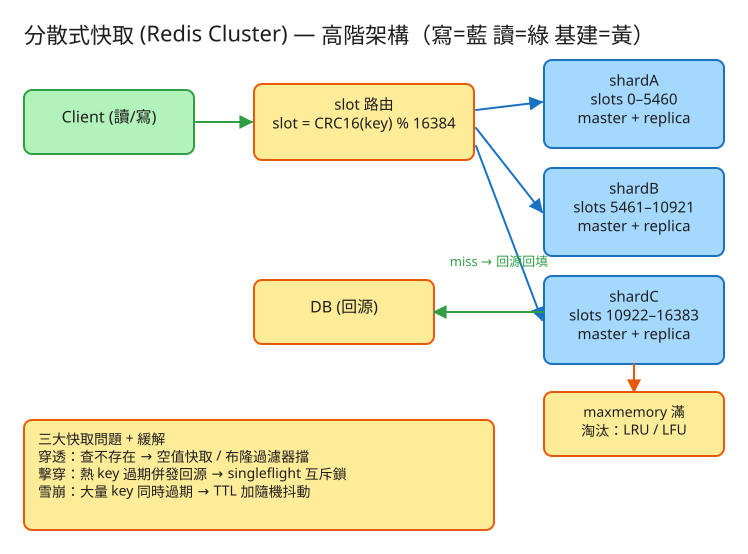

K 分散式系統 看故事就懂 輕鬆讀 25 分鐘
想像你在大圖書館查資料。每查一本書，都要走到很裡面的大書庫慢慢找——又遠又慢。 聰明的做法是：把最多人借的那幾本熱門書，放在大門口的小書架上，拿了就走。
快取（cache）就是那個「大門口的小書架」：把熱門資料放在「拿了就走的近處」，省去每次都跑去問又慢又累的資料庫（大書庫）。
「分散式」快取，就是當一個小書架放不下、人也擠不下時，改成開好幾家連鎖店，把書分到各分店去——這就是這題的全部主題。
很多人會想：「不就少走幾步路嗎，能差多少？」差超多。用一個你有感覺的比喻——
電腦世界也一樣：快取把資料放在記憶體裡（像桌邊冰箱，奈秒～微秒級），資料庫則要去硬碟撈（像跑超市，毫秒級）。差距常常是幾百到幾千倍。
而且大多數系統是「讀多寫少」：同一筆熱門資料（首頁、爆款商品、熱門貼文）被無數人重複讀。每個人都跑一次超市太蠢了——買一次放冰箱，後面大家從冰箱拿就好。
💭 停一下：如果一筆資料每秒被讀 100 萬次，但內容幾乎不變，把它放快取能省下什麼？
別被「分散式快取」嚇到。整件事其實就是闖 4 關，一關一關來：
最核心的一關：把熱門資料放進記憶體（快取），讀的時候先問它。 有（命中）就直接拿走，超快；沒有（未命中）才去問慢吞吞的資料庫，拿到後順手放一份到快取，下次就快了。
👉 一個關鍵字：命中率——架上「剛好有」的比例。命中率越高，越少人需要跑去大書庫，系統就越快、資料庫越輕鬆。
資料多到一台機器的記憶體裝不下，或人多到一台扛不住時，就要把資料分到很多台快取。問題是：每筆資料該放哪一家分店？
這個「號碼」工程上叫 slot（槽位）：把資料的名字（key）丟進一個固定公式算出 0～16383 的號碼，再照號碼分給各分店（shard）。 所以查資料變兩步：① 算號碼 → ② 照號碼直接走對的那家店，不用問每一家。
生意變好要多開一家分店，或某家要關門。難就難在：搬貨會中斷營業，能不能少搬一點？
這就是「號碼牌制度」的精髓：因為位置是綁在號碼而不是「現在有幾家店」，加減一家店時，只有被重新分配的那些號碼要搬家，絕大多數貨都不動。這叫 重分片（resharding）。
另外每家分店都配一個備胎店（replica）：平時跟著抄一份貨，主店突然倒了，備胎立刻頂上繼續營業——這叫故障轉移。
小書架空間有限，放滿了又來新書怎麼辦？總得丟掉一些舊的，騰位置。問題是：丟哪一本？
LRU 看「最近有沒有人用」，LFU 看「總共多少人用」。兩者各有適用，但目的一樣：架子滿了，優先丟最沒價值的，保住命中率。
工程上的「取捨」聽起來很抽象。換個方式記：快取系統最怕三件事，而且這三件事有個共通點——都是「大家一起湧去資料庫」，把後面的資料庫打垮。快取本來是來保護資料庫的，最怕的就是它沒擋住。

✏️ 用 Excalidraw 開啟編輯（diagram.excalidraw）白話導讀，跟著一筆查詢走一遍：
看完上面，這些詞你其實都已經懂了，這裡只是把「工程術語 ↔ 白話」對起來，Part 2 會用到：
| 工程術語 | 白話解釋 |
|---|---|
| 快取 (Cache) | 大門口「拿了就走」的小書架，放熱門資料省得跑大書庫 |
| 命中 / 未命中 | 架上「剛好有」(命中) / 「沒有，要跑大書庫」(未命中) |
| 命中率 | 架上「剛好有」的比例，越高越好 |
| 資料庫 (DB) | 又慢又遠的大書庫，快取就是來幫它擋人的 |
| 分片 (Shard) | 連鎖店的「分店」：一家放不下就分很多家 |
| slot（槽位） | 商品的「號碼牌」(0～16383)，照號碼決定放哪家分店 |
| 重分片 (Resharding) | 開/關分店時「只搬被分走的那些號碼」，其餘不動 |
| 主 / 從 (master/replica) | 主店營業 / 備胎店抄一份，主店倒了頂上 |
| 故障轉移 (Failover) | 主店倒了，備胎店自動升級頂上繼續營業 |
| LRU / LFU | 架子滿了，丟「最久沒人碰」/「最少人借」的 |
| TTL | 資料的「保鮮期」，到期自動清掉 |
| 穿透 / 擊穿 / 雪崩 | 三種「沒擋住、大家湧去打垮資料庫」的災難 |
| cache-aside（旁路） | 「先問架上、沒有才跑大書庫並放回架上」這套規矩 |
| QPS | 每秒幾筆請求（衡量「多忙」的單位） |
我們估幾個關鍵數字（數字不必背，重點是感受它的「形狀」）：
| 估什麼 | 大概數字 | 所以呢？ |
|---|---|---|
| 要放多少貨（資料量） | 5 億筆，每筆約 400 bytes ≈ 200 GB | 一台機器（約 64 GB）裝不下 → 要分片 |
| 一台店面多大 | 單機可用 ~64 GB | 200 GB ÷ 64 GB → 至少要 4 家分店 |
| 多少客人（讀 QPS） | 尖峰每秒 100 萬次讀 | 單店約 10 萬 → 要 ~10 家分店分流 |
| 命中率要多高 | 目標 > 95% | 命中率每掉 1%，跑去資料庫的人就暴增 |
💭 停一下：為什麼決定「要分幾家分店」時，要同時看「裝得下」和「客人多少」兩條線？
快取最核心其實只有兩張「點餐單」，剩下是給管理員用的：
① 放資料進架上（寫）
SET user:42 "資料內容" 保鮮期300秒
→ 系統先算號碼(slot)，找到對的分店，放進去「保鮮期(TTL)」很重要：到期自動清掉，避免架上塞滿過時的舊貨。記得 Part 1 說的「雪崩」——一堆資料同保鮮期會一起過期，所以實務上會各加一點隨機錯開。
② 拿資料（讀）
GET user:42
→ 算號碼 → 走對的分店 → 有就回(命中)；
沒有(未命中) → 應用程式跑去資料庫拿，再 SET 放回架上這套「先問架上、沒有才跑資料庫並放回架上」的規矩，工程上叫 cache-aside（旁路快取），是最常見的用法。
③ 管理員專用（運維）
加一家分店 / 關一家分店 → 觸發「只搬受影響號碼」的重分片
讓備胎升主 → 主店倒了，備胎頂上(故障轉移)
查號碼對照表 → 看哪個號碼段在哪家分店有個聰明設計：算號碼這件事是「客人自己算」（smart client），算完直接走對的分店，中間不用設一個總櫃台幫大家轉。萬一走錯店，那家店會回一句「搬到 X 店了，去那邊」（MOVED），客人更新一下記憶就好。
固定 16384 個號碼（slot 0～16383）。每筆資料用名字(key)丟進一個固定公式算出唯一號碼：號碼 = 公式(key) % 16384。
同一個名字永遠算出同一個號碼，所以永遠找得到它在哪家店。
記「哪些號碼段歸哪家分店」，例如：0～5460 → A 店、5461～10921 → B 店、10922～16383 → C 店。
開新店或關店時，改的就是這張表（把某些號碼段改派給別家），並把對應的貨搬過去。
記「每家分店 = 1 個主店 + 幾個備胎」。主店負責收客、備胎默默抄一份貨；主店一倒，備胎升級當主店繼續營業。 抄貨是「非同步」（主店先收下、之後再慢慢抄給備胎）——這樣主店才快，但代價是主店突然倒的瞬間，可能掉最後抄到一半的幾筆。快取容許這點小損失，換取「快」。
| 哪裡會塞車 | 怎麼拓寬 |
|---|---|
| 一筆超熱門資料把它那家分店打爆（號碼不能再細分到別家） | 在客人自己身邊也放一份（本地快取）、或把熱門資料拆成好幾份散到不同號碼 |
| 某筆資料體積超大（大清單），讀寫慢還卡住搬家 | 拆小、分段慢慢處理，別一次整包搬 |
| 開/關分店搬貨期間會卡頓、延遲抖動 | 挑離峰時段搬、限速慢慢搬，客人走錯店時乖乖照「搬到 X 店」提示走 |
| 命中率下滑，跑去資料庫的人暴增 | 多開幾家分店擴容、調淘汰策略、縮短或分層保鮮期 |
| 讀備胎店可能讀到「還沒抄完」的舊貨 | 重要的讀走主店，或強制等備胎抄完再回 |
「Part 1 的三個怕」是核心。這裡補幾個常被面試官追問的取捨：
讀十遍不如玩一遍。這題有一個真的可以跑的小程式，讓你親眼看到「號碼牌分店 + 淘汰 + 三大問題」：
# 啟動（在這題的 demo 資料夾裡）
cd demo
php -S localhost:8034 -t public
# 然後瀏覽器打開 http://localhost:8034玩過 demo 了，來掀開引擎蓋看看「那幾關到底是哪幾段程式做的」。 好消息：核心只有三個小檔，剛好對應前面講的工作。不用會 PHP，我把程式翻成白話、只留關鍵那幾行，看註解就懂。
第一關，把資料的名字（key）算成一個 0～16383 的號碼。就像連鎖店門口給每件商品發號碼牌——同一件永遠同一號。
// 固定 16384 個號碼（這就是 Redis Cluster 的招牌數字）
總號碼數 = 16384
function 算號碼(名字) {
號碼 = crc32(名字) % 16384 // ← 把名字打成一個亂數，再對 16384 取餘數
return 號碼 // 同一個名字 → 永遠同一個號碼 → 永遠在同一家店
}關鍵就這一行 crc32(名字) % 16384：crc32 把任意名字打成一個大數字（分佈很均勻），% 16384 把它收進 0～16383。同名同號是整套分店制度的地基——查資料才能「算完號碼直接走對的店」。
有了號碼，還要一張「哪段號碼歸哪家店」的對照表。查資料就是拿號碼去這張表上找區段：
function 號碼是哪家店(號碼) {
foreach (對照表 的每個區段 as 段) {
if (段.起 <= 號碼 且 號碼 <= 段.迄)
return 段.分店 // 落在這段 → 就是這家店
}
}重點來了——加一家新分店時，怎麼「只搬一部分貨」？訣竅是只從現有各店的尾段勻幾段號碼給新店，其餘原封不動：
function 加分店(新店) {
目標 = 16384 ÷ (分店數 + 1) // 新店該分到多少號碼（盡量平均）
foreach (現有各店 by 號碼多到少) {
勻出 = min(還缺多少, 這店尾段能讓出的量)
把這店尾段的「勻出」個號碼改派給 → 新店 // ← 只有這幾段要搬！
記下「這段從 X 店搬到 新店」 // 回報哪些號碼換了主
}
}這就是 Part 1 說的重分片：因為位置綁在號碼不是「現在有幾家店」，加店只動「被勻走的那幾段號碼」，絕大多數貨都不用搬。對比「用機器數量取模」那種——一改機器數幾乎全部重洗。真實系統是 Redis Cluster 的 slot 搬移，邏輯一模一樣。
走到對的分店後，分店的小書架空間有限。放滿了又來新貨，就得先丟一個騰位置——丟誰？
function 該丟誰() {
// 1) 過期的先丟（保鮮期到了最該走）
if (有任何 key 已過期) return 那個過期的 key
// 2) 看策略挑「最沒價值」的：
if (策略 == LRU) return 「最久沒人碰」的 key // 比 lastAccess（最近用到的時間）最小
if (策略 == LFU) return 「總共最少人用」的 key // 比 freq（被讀的累計次數）最小
}每次有人讀到一個 key，就更新它的兩個小數字：lastAccess = 現在（最近用到）、freq += 1（累計次數）。LRU 就是用 lastAccess 挑「最久沒被碰」的丟；LFU 用 freq 挑「整體最少人用」的丟。對回比喻：架滿了，就丟「最久沒人翻」或「最少人借」的那本書，留下熱門。
💭 停一下：LRU 為什麼「用到就更新 lastAccess」就能達成「丟最久沒人碰的」？
lastAccess 記的是「它上次被用到的時間」。有人用它就把這時間刷成「現在」——等於把它移到「最近用過」這一端。要淘汰時，挑 lastAccess 最小的（時間最舊 = 最久沒人碰）砍掉就對了。白話就是「用到就移到最前面、淘汰時砍最後面那個」。這是全題的心臟。讀資料時的標準流程叫 cache-aside：先問架上，沒有才回源資料庫並放回架上。三大緩解全塞在這條讀路徑上：
function 讀(名字, 開關) {
值 = 從快取拿(名字)
if (值 存在) return 值 // 命中，最快
// ── 穿透緩解：布隆過濾器先擋「一定不存在」的 ──
if (開關.布隆 且 布隆說一定沒有(名字))
return null // 連資料庫都不用打
// ── 擊穿緩解：互斥鎖，同一 key 同時只放一人回源 ──
if (開關.互斥鎖) {
搶鎖(名字) // 搶到的人才去補貨
值 = 再從快取拿一次(名字) // 別人可能已回填 → 撿現成
if (值 存在) { 放鎖(); return 值 }
}
值 = 打資料庫(名字) // 真的回源（這裡才碰 DB）
if (值 == null) {
// 穿透緩解：查無也快取一下下，別一直打 DB
if (開關.空值快取) 寫快取(名字, "__查無__", 30秒)
} else {
// 雪崩緩解：保鮮期加一點隨機，別讓大家同秒過期
if (開關.抖動) 保鮮期 += random(0, 保鮮期/2)
寫快取(名字, 值, 保鮮期)
}
放鎖(); return 值
}三個開關各對應一個「怕」：布隆 + 空值快取擋穿透（不存在的 key 別一直打 DB）、互斥鎖擋擊穿（熱 key 過期瞬間只放一人去補貨、其餘撿現成）、保鮮期加抖動擋雪崩（一批 key 的過期時間散開、不擠同一秒）。demo 還會數「打了資料庫幾次」，讓你親眼看到開緩解前後差幾倍。
| 關卡（前面講的） | 哪個檔 | 關鍵那段 |
|---|---|---|
| ① 算號碼 → 走對的店 | SlotMap | crc32(key) % 16384 + 號碼是哪家店() |
| ② 加減店只搬一段（重分片） | SlotMap | 加分店() 勻尾段號碼 |
| ③ 架滿了丟最沒人要的 | CacheNode | 該丟誰()（LRU/LFU） |
| ④ 擋穿透/擊穿/雪崩 | Cluster | 讀() 裡的三個開關 |
👉 重點：真實系統會把「JSON 檔 + 迴圈過濾」換成 Redis Cluster（slot 用 crc16、主從複製、記憶體內 LRU/LFU、布隆/互斥鎖回源保護）， 但上面這幾段判斷邏輯一字都不用改——16384 slot 路由、LRU/LFU 淘汰、穿透/擊穿/雪崩三大問題的緩解，邏輯完全一樣，只是換更快的工具。所以讀懂這個小 demo，你就讀懂了這題的核心。
先不要看答案，自己用講給朋友聽的方式回答看看（講得出來才是真的懂）：
分散式快取 = 大門口的連鎖小書架：把熱門資料放近處，省去每次問慢資料庫。
4 個關卡：① 把熱資料放近處（快取）→ ② 用號碼牌(slot)分到很多分店(分片) → ③ 加減店只搬被分走的號碼（重分片）→ ④ 架滿了丟最沒人要的（LRU/LFU）。
3 個怕（都會湧去打垮資料庫）：穿透（問不存在的→空值快取/布隆擋）、擊穿（熱門剛過期大家湧入→只放一人補貨）、雪崩（一起過期→到期加隨機錯開）。
工程細節一句話：先估「裝得下＋客人多少」決定分幾片 → 用「點餐單(API)」SET/GET、走 cache-aside → 三張表（號碼/分店/主從）＋固定 16384 號碼 → 命中率是命脈，找出塞車環節各自拓寬。
想看更精簡、面試速查用的版本？👉 前往完整版（同樣內容的工程速查格式）。